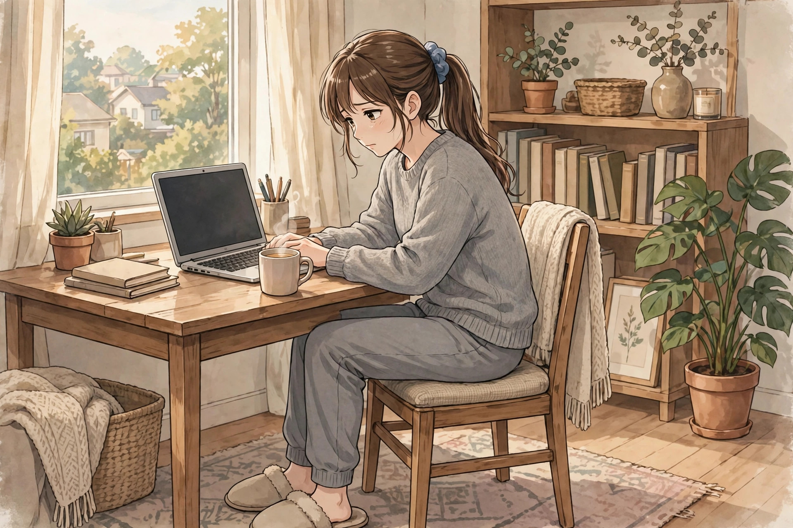

座りっぱなしの時間が、首・肩・腰に何をしているかを解説します
デスクワークの不調は、「同じ姿勢で固まること」と「画面に引き寄せられる頭の位置」から生まれます。道具の調整と、固めない習慣の両方が対策の軸です。
仕事が終わる頃には肩が重い、首が回しにくい、目が疲れる。在宅ワークが増えた近年は、通勤で歩く時間が減った分、座る時間がさらに長くなりました。このページでは、デスクワークで姿勢が崩れる仕組みと、不調が出やすい部位、今日から変えられるポイントを解説します。
人の体は、動き続けることを前提に作られています。同じ姿勢を保つ間、姿勢を支える筋肉は休むことなく働き続け、血の巡りは滞りやすくなります。座り姿勢では特に、太ももの裏やお尻の筋肉が圧迫され、ふくらはぎのポンプも止まったままになります。
問題は姿勢の良し悪しだけではありません。たとえ良いとされる姿勢でも、数時間そのまま固定されれば負担は蓄積します。不調を防ぐ鍵は「正しい姿勢を保ち続けること」ではなく、「姿勢を固定しないこと」にあります。
ノートパソコンの画面は低く、小さくなりがちです。画面をのぞき込む姿勢では、頭が体の中心より前に出ます。頭の重さは体重のおよそ1割ほどで、前に出る角度が大きくなるほど、首の後ろ側の筋肉が支える負担は増えていきます。
この姿勢が続くと、首の本来のカーブが失われてまっすぐに近づく「ストレートネック」の状態が進みます。首の後ろの張り、肩こり、頭の重さは、この頭の位置から連鎖して起こることが多い不調です。画面を目線の高さに近づけることは、姿勢への最も効果の大きい調整の一つです。
在宅ワークでは、ダイニングの椅子や低めのテーブルで作業する方も多く見られます（図1）。椅子の高さと画面の位置が合っていないと、背中が丸まり、腕の置き場も定まらず、肩がすくんだ姿勢で固定されます。

図1：在宅デスクでノートPCに向かう姿勢。画面の低さが、頭の前出と背中の丸まりを作ります。
専用の書斎がなくても、ノートパソコンを台や本の上にのせて画面を上げ、外付けのキーボードを使うだけで、頭の位置は大きく変わります。環境の調整は、根性で姿勢を保つより先に取り組みたい対策です。
頭の前出を支える首の後ろと肩まわりは、デスクワークで最も負担が集中する部位です。肩甲骨まわりの張りや、腕の重さとして感じることもあります。
画面を見続ける間、まばたきは減り、目の筋肉は同じ距離に焦点を合わせ続けます。首や肩の緊張と重なって、目の疲れとして感じやすくなります。
キーボードとマウスの操作は、手首を反らした位置で固定されがちです。手首や指の疲れ、前腕の張りは、肩の緊張ともつながっています。
骨盤が後ろへ傾いた座り方（仙骨で座る形）では、腰のカーブが失われ、背中全体が丸くなります。夕方の腰の重さや背中の張りの背景です。
座り姿勢の土台は骨盤です。椅子に浅く座り、背もたれに体を預ける座り方では、骨盤は後ろへ傾き、背中は丸くなります。逆に、坐骨（お尻の下の骨）で座面をとらえて骨盤を立てると、背骨のカーブは自然な形に戻り、頭の位置も中心に近づきます。
足の置き方も関係します。足を組む、片側に体重を寄せるといったクセは、骨盤の左右差を作ります。両足の裏を床につけ、膝が股関節より少し低くなる高さに椅子を合わせることが、座り姿勢の基本です。
クッションの使い方にもポイントがあります。腰の後ろに小さなクッションを入れると、骨盤が後ろへ倒れるのを支え、背中の丸みを防ぎやすくなります。逆に、座面が柔らかすぎる椅子やソファでは、骨盤が沈み込んで後傾が固定されます。座る場所ごとの体の感覚の違いを意識することも、姿勢の見直しの手がかりです。
タイマーや会議の区切りを合図にすると続けやすくなります。完璧な姿勢を目指すより、「固めない」ことを習慣にする方が、デスクワークの体には合っています。動きの種類は多くなくて構いません。立ち上がる、胸を開く、首を回す。この3つを回すだけでも、固まる部位は分散していきます。
在宅ワークでは、オフィス以上に「動くきっかけ」が設計されていません。立ち上がる理由を自分で作ることが、在宅ワークの体調管理の中心になります。飲み物を取りに行く、窓を開ける、洗濯物を取り込むといった家事の動きも、立派なリセットになります。仕事と生活の場が同じだからこそ、生活の動きを体のケアに取り込めるのが在宅ワークの強みです。
対策の基本は、短い動きをこまめに入れることです。1時間に一度立ち上がり、胸を開いて深く息を吸う。肩甲骨を寄せる動きを数回繰り返す。首をゆっくり左右に倒す。どれも1分以内で済む動きですが、固まった筋肉の巡りを戻し、姿勢を一度リセットする働きがあります。
タイマーや会議の区切りを合図にすると続けやすくなります。完璧な姿勢を目指すより、「固めない」ことを習慣にする方が、デスクワークの体には合っています。
当サロンでは、デスクワークの方には、首・肩まわりの張りだけでなく、胸の前の縮み、肩甲骨まわりの働き、骨盤の傾きまで含めて状態を確認します。張っている場所だけをほぐしても、作っている姿勢が同じなら負担は戻ってくるためです。施術とあわせて、画面の高さや座り方など、職場と自宅の環境で変えられる点もお伝えしています。
「仕事がある限り姿勢は仕方ない」と感じている方ほど、環境の調整と体のケアを組み合わせることで、夕方の重さは変わってきます。
すべてを一度に揃える必要はありません。まず画面の高さ、次に椅子、というように一つずつ変え、夕方の体の感覚がどう変わるかを確認しながら進める方が、合う・合わないを判断しやすくなります。
調整の効果は、その日のうちに判断しないことも大切です。新しい姿勢に体が慣れるまでには数日かかることがあります。変えた直後の違和感だけで判断せず、1週間ほど使ってみて、夕方の重さや朝の首の感覚がどう変わったかで評価してください。
デスクワークの不調が夕方に強くなるのは、負担の蓄積が理由です。朝は回復していた筋肉も、同じ姿勢を支え続けるうちに疲労が重なり、巡りが落ちて、張りとして感じられるようになります。昼過ぎに一度大きな休憩と動きを入れると、蓄積のカーブはゆるやかになります。
集中の深さも関係します。締め切り前など集中が高まる時間ほど、姿勢は固定され、まばたきや息も浅くなりがちです。「忙しい日ほど夕方がつらい」と感じる背景には、この固定の強さがあります。
オンライン会議では、自分の顔が画面に映ることで、無意識に姿勢と表情を作り続ける緊張が生まれます。カメラが低い位置にあると、顔を画面に近づける姿勢が固定され、頭の前出が強くなります。カメラを目線の高さに置くことは、見た目の印象だけでなく、首への負担の面でも意味があります。
会議が続く日は、会議と会議の間に立つ時間を作ることも大切です。カメラをオフにできる場面では、肩を回したり胸を開いたりする小さな動きを入れてください。
座り続ける生活は、姿勢の問題であると同時に、体全体の巡りの問題でもあります。ふくらはぎの筋肉は歩くことで静脈とリンパを押し上げるポンプの役割を果たしますが、座ったままではこのポンプが止まります。夕方に脚が重く感じる、靴がきつくなるといった変化は、デスクワークの方に多い訴えです。
巡りの低下は、肩や首の張りの回復も遅らせます。張った筋肉には新しい血液が届きにくく、疲労が抜けにくい状態が続きます。歩行は最も手軽な巡りの対策です。昼休みに10分歩く、エレベーターではなく階段を使う、といった日常の歩行量が、夕方の体の重さを左右します。
仕事中に崩れる姿勢の多くは、その瞬間の体にとって「楽な姿勢」です。背中を丸めれば支える筋肉は休めますし、足を組めば骨盤を固定できます。体は楽な形を選び、それを繰り返すうちに、その形が標準の姿勢として定着していきます。
だからこそ、姿勢の見直しは「楽な姿勢を禁止すること」ではありません。楽な姿勢に寄りかかる時間を短く区切ること、そして支える筋肉が働く姿勢も日常の中に混ぜることです。楽と負担のバランスを取る視点が、長く続く仕事の体には合っています。
当サロンの施術後に「体が軽い」と感じる方が多いのは、張っていた筋肉の負担配分が変わるためです。その軽さを日常で保つには、施術で整えた状態を、仕事環境の中でどう使うかが鍵になります。施術と環境調整は、別々の対策ではなく一つの流れとして考えています。
Q. 椅子や机を変えれば、不調はなくなりますか？
A. 環境を整えることは大切な土台ですが、同じ姿勢で固まること自体が不調の背景にあるため、道具だけで解決するとは限りません。環境の見直しと、合間に体を動かす習慣を組み合わせることが現実的な対策です。
Q. スタンディングデスクは姿勢に良いのですか？
A. 座りっぱなしを避ける選択肢の一つです。ただし、立ったまま固まることも別の負担になるため、座る時間と立つ時間を切り替える使い方が向いています。足元や画面の高さの調整もあわせて行ってください。
Q. 目の疲れも姿勢と関係がありますか？
A. 画面との距離が近いと頭が前に出て、首や肩の負担が増えます。その緊張が目のまわりの疲れ感と一緒に感じられることがあります。画面の位置と距離を見直すことは、目と姿勢の両方への対策になります。
Q. 在宅ワークの日だけ不調が強いのはなぜですか？
A. 通勤や移動がなく、歩く量が大きく減ることが背景の一つです。また、自宅の椅子や机は仕事用に調整されていないことが多く、姿勢が崩れたまま固定されやすくなります。
解説と施術は、施術歴30年・鍼灸師の資格を持つ平賀建人が担当します。登録販売者・アロマセラピスト・パーソナルトレーナーの知識も活かし、体の仕組みをできるだけ分かりやすくお伝えすることを心がけています。
この記事は専門解説シリーズの1本です。料金やご予約についてはトップページをご覧ください。